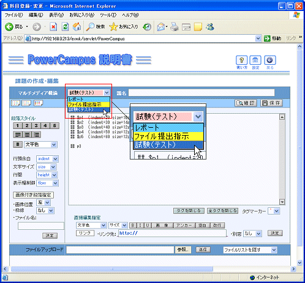
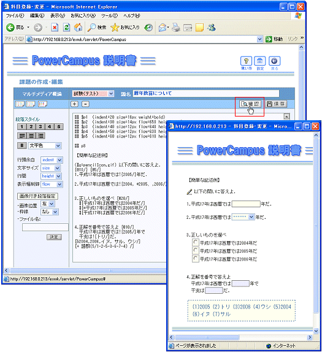
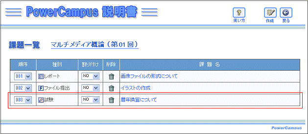
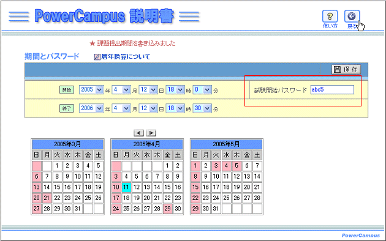

試験問題の出題と採点 － (2)問題の作成
問題の作成
作成手順を示します．ＰＭＬエディタを使いますので操作方法はこれまでと同じです．
ＰＭＬエディタで試験(テスト)を選ぶ
ＰＭＬエディタの開き方は「
出題のためにＰＭＬエディタを開く
」を参照してください．ここではエディタを開いているものとします．最初に，課題種別として
試験(テスト)
を選択してください．

問題を書く
エディタで問題を書きます．[確認]ボタンをクリックして，確かめながら作成してください．

をクリックして保存し，
戻る
ボタンをクリックする
問題が完成したら，保存して戻るボタンで課題画面に戻ります．新しく課題ができていることが確認できます．

問題を講義に割り付ける
問題を作成したら，これを特定の講義に割り付け，さらに，実施期間などを設定しなければなりません．これは全ての課題で共通な操作です．すでにレポート課題の章で説明していますので，手順は「
課題を講義に割り付ける
」を参照してください．
試験(テスト)では，実施期間設定で，期間に加えて
試験開始パスワード
を設定できます．試験を受けるとき，このパスワードを入力しないと問題を見れなくする機能です．定期試験などのとき，会場で口頭で伝えて入力させ，試験を開始するという使い方になります．いつでも，何回でも変更可能です．実施期間設定と両方同時に指定することもできます．また，講義情報のひとつとして記録されますので，同じ科目を複数のクラスで実施しているときは，それぞれのクラスで異なるものを設定してください．


 問題の作成
問題の作成